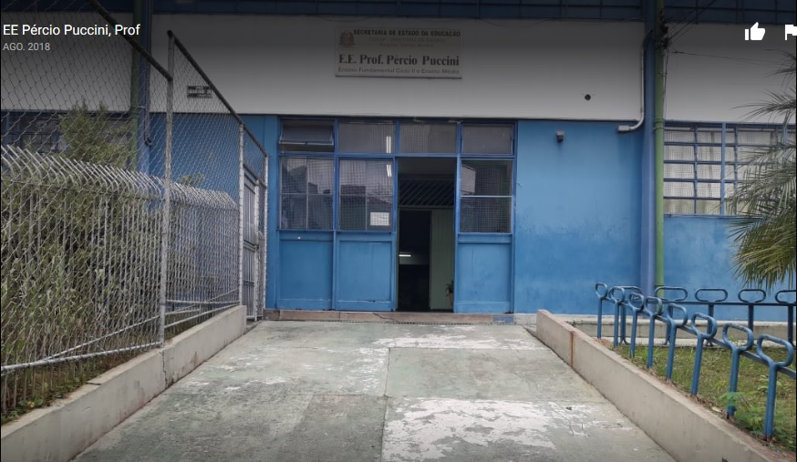
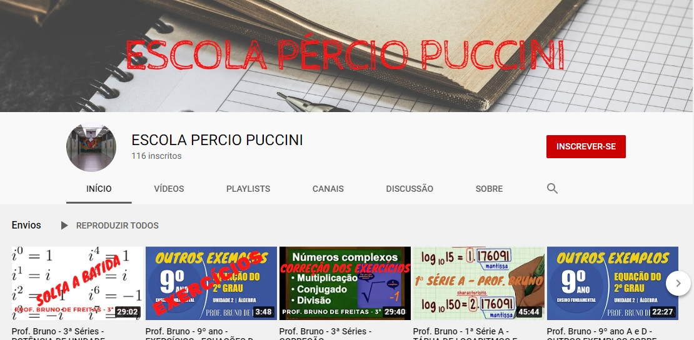

.
:

Projetos desenvolvidos durante o ano de 2014:
clique no link
Atividades desenvolvidas durante o mes de Maio/2015:
Atividades desenvolvidas durante a GINCANA DA MATEMATICA:
.
Blog criado com o intuito de informar as atividades ON LINE:
Canal criado com o intuito de ajudar os alunos na realizacao das atividades ON LINE:

clique no link